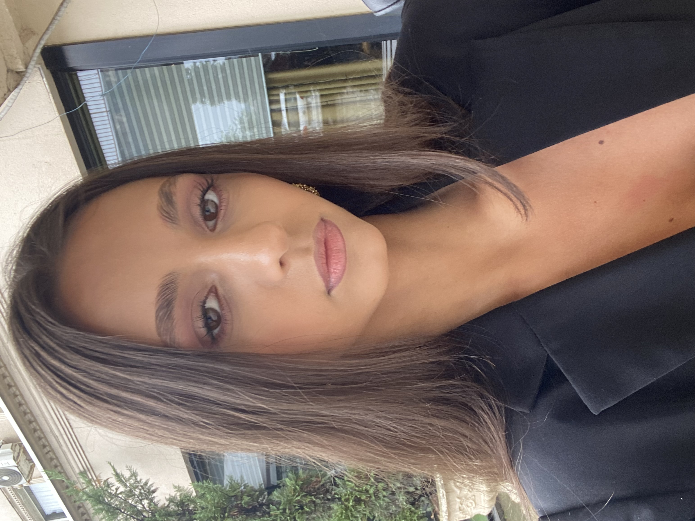

Vesa Jashari

Summary
I am a hardworking and dedicated individual, willing to learn new skills and take on challenges in the field of IT. I am passionate about technology, programming, and problem-solving, and I am eager to grow my knowledge through practical projects and continuous learning. I am motivated to contribute positively, adapt quickly, and develop a strong foundation in IT.
Education
- Bachelor in Computer Science - University of Business and Technology (UBT)
Expected graduation : June 2028
Personal Projects
- Built a simple website using HTML, CSS, and JavaScript.
- Mini Cybersecurity Project : Conducted basic vulnerability testing on a practice website to learn web security fundamentals.
Skills
- Problem-Solving:⭐⭐⭐⭐⭐
- Adaptability : ⭐⭐⭐⭐
- Computer skills : ⭐⭐⭐⭐
Other